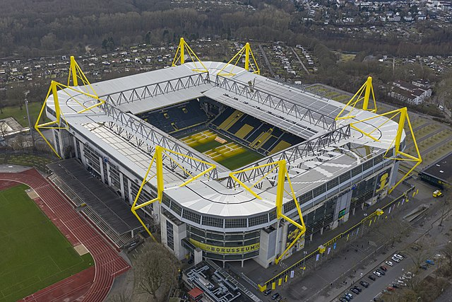
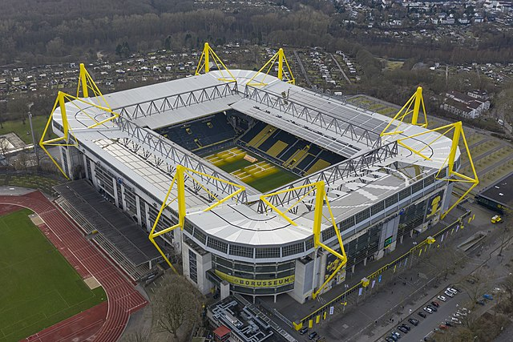

Other Stadiums:


Signal Iduna Park, home to Borussia Dortmund, is more than just a soccer stadium - it is a symbol of passion, tradition and unforgettable moments. With a capacity of over 81,365 spectators, it is the largest stadium in Germany and one of the most impressive soccer stadiums in Europe. BVB's “temple”, as it is affectionately known by fans, not only offers a unique atmosphere at home matches
Other Stadiums:


Follow us on Social Media!!